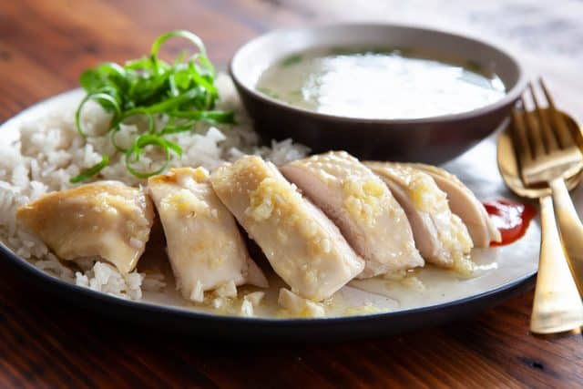
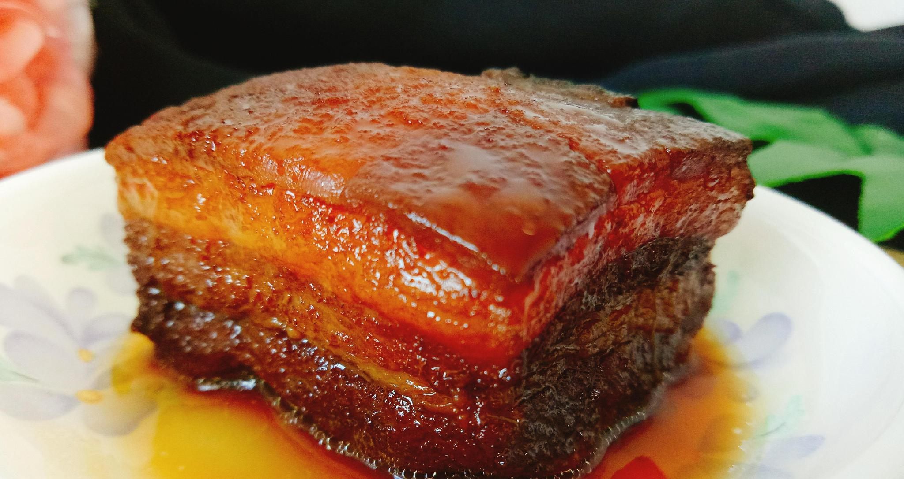
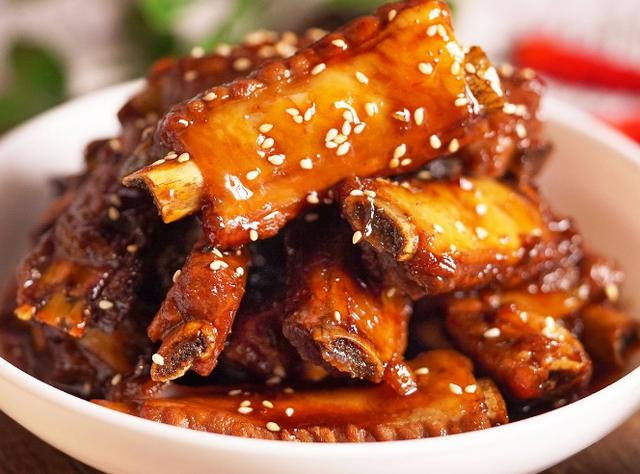
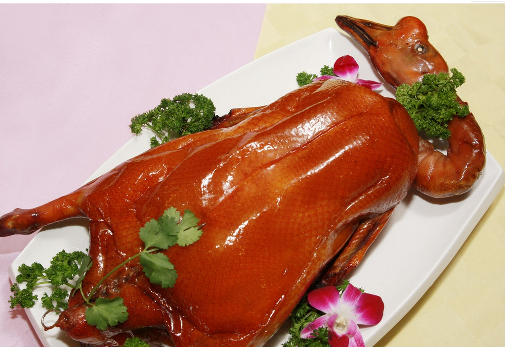
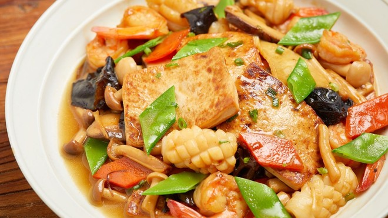
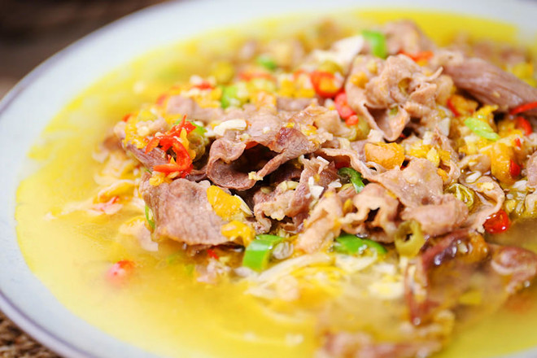
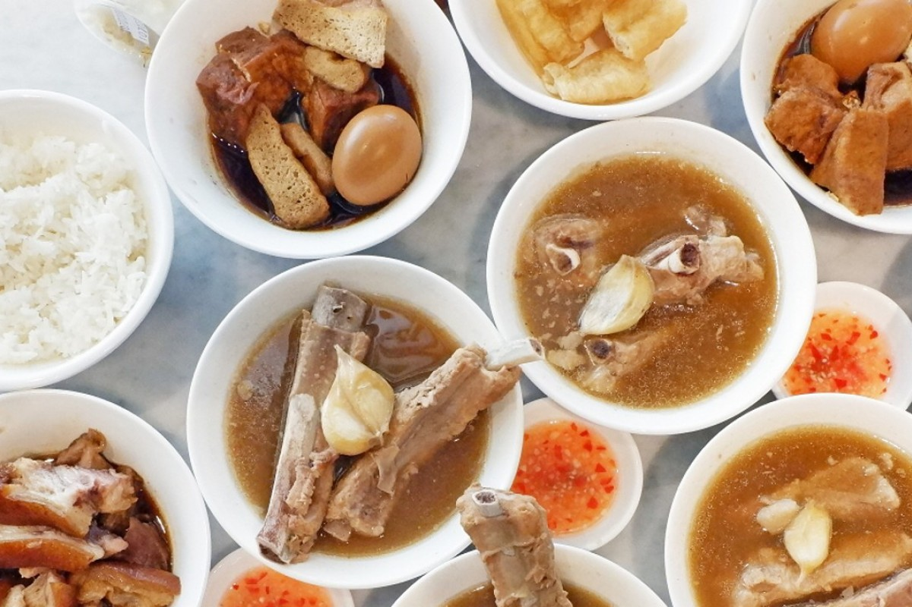
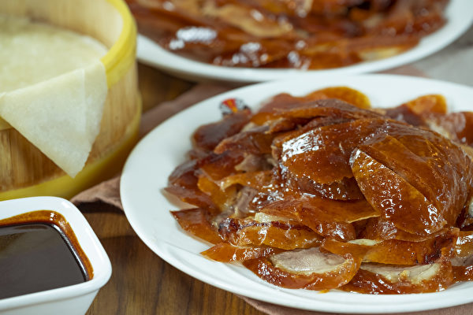
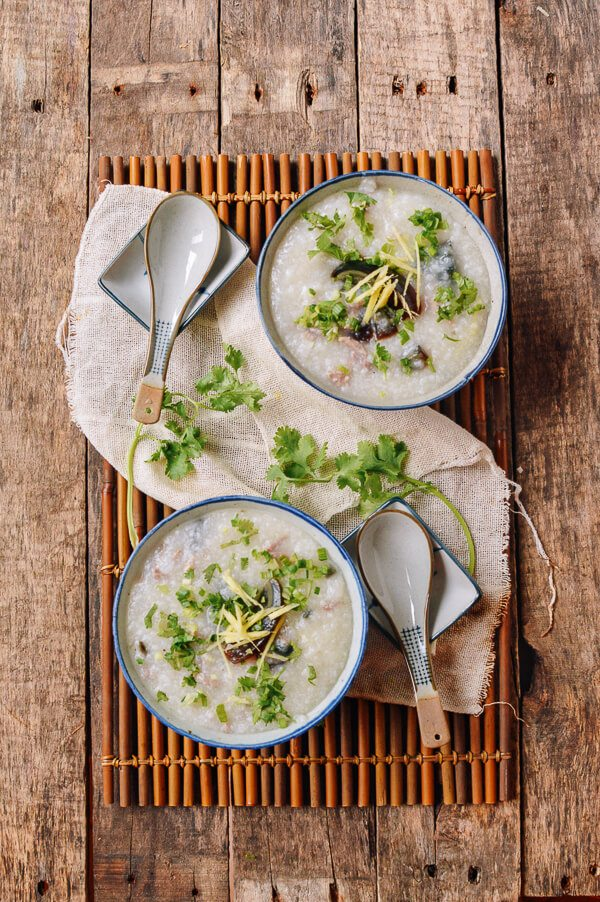
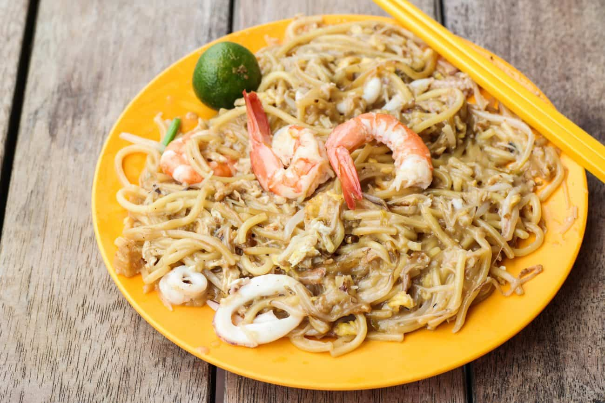

In our Chinese Cuisine Finder App,
we can assure you that we only list AUTHENTIC recipes and reputable resturants.
Before listing any of the recipes and resturants, we will make sure that they are approved by our Gourmet Team,
a diverse Chinese food guru team from across Asia.

1. Hainan Chicken Rice
#chicken #rice #south

2. Braised Pork Belly
#pork #east #south

3. Sweet & Sour Ribs
#pork #sweet #sour #east #south

4. Cantonese Roasted Goose
#goose #canton #south

5. Tian-jin Eight-Treasures Tofu
#veganoptional #north #seafood #tofu

6. Spicy Sour Soup with Beef
#spicy #beef #south #soup
7. Braised Pork Rice Bowl
#pork #rice #south

8. Bak Kut Teh
#pork #rice #soup #south

9. Peking Roast Duck
#duck #rice #north
10. Lanzhou Beef Soup Noodle

11. Minced-meat Porridge with Century Egg

12. Crisp Fritter Pancake
13. Gobuli Buns
14. Caramalized Sweet Potatoes
15. Cumin Lamb
16. Ding Ding Fried Noodle
17. Cold Noodles
18. Red Swamp Crayfish
19. Gan Li Niang
20. Gan Lam Pa
Hainan Chicken Rice
|
海南鷄飯
Description: Hainan Chicken Rice is made with rice cooked with Chicken broth. It is a traditional dish in Hainan, the Southernmost tip of China. It is also very popular in places like Singapore and Malaysia.
Braised Pork Belly is a traditional Eastern Chinese dish that has a history of a thousand year. The pork is cut into thick square cuts and braised with wine, soy sauce and herbs. The mouthfeel is oily but never greasy.
Cantonese Roasted Goose is the all-time favorite of the people from the Canton Region. The marinating and cooking process takes almost a day.
The crispy skin of the Goose is the essence of the dish.
Bak Kut Teh, also known as bone soup, is usually made from parts like pork ribs, tail bones and pepper. It is a traditional dish from Fujian. It is very popular in Southern China and Singapore.
Peking Duck is a historical dish that was served in the Imperial Court and can be dated to the Yuan Dynasty (1330s~). The crispy thin skin is what people would salivate for.